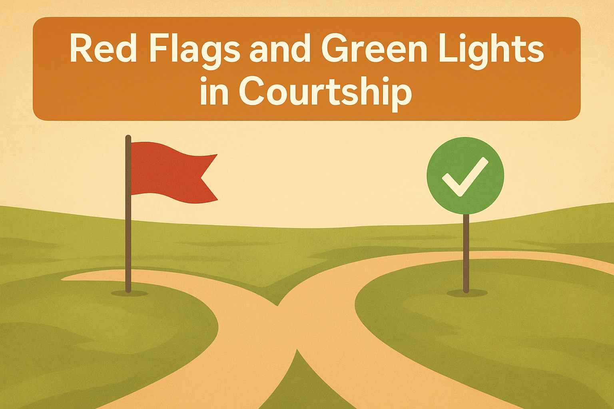

Common Relationships Questions
At What Age Am I Ready For Marriage?
Can I Date Someone We Don't Share Faith With?

What Are Red Flags And Green Lights To Watch For?
Can I Marry Someone Older Than Me?
What If My Parents Refuse My Partner?
Must I Be Financially Stable To Marry?
Can We Engage In Intimacy During Our Courtship?
How To Handle A Heartbreak?
How To Handle Unfaithful Partner I Haven't Yet Married?
Is Come We Stay And Cohabiting Biblical?